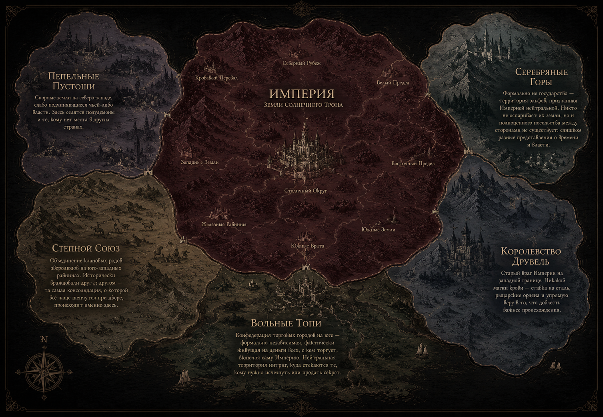

Империя — не единственная сила на карте. Просто самая уверенная в себе.

Земли Солнечного Трона и то, что их окружает
Старый враг Империи на западной границе. Никакой магии крови — ставка на сталь, рыцарские ордена и упрямую веру в то, что доблесть важнее происхождения. Пограничные стычки случаются регулярно, полномасштабной войны не было уже поколение.
Конфедерация торговых городов на юге — формально независимая, фактически живущая на деньги всех, с кем торгует, включая саму Империю. Нейтральная территория интриг, куда стекаются те, кому нужно исчезнуть или продать секрет.
Спорные земли на северо-западе, слабо подчиняющиеся чьей-либо власти. Здесь селятся полудемоны и те, кому нет места в других странах. Империя считает Пустоши источником беспорядка — и время от времени посылает туда легионы «наводить порядок».
Объединение клановых родов зверолюдов на юго-западных равнинах. Исторически враждовали друг с другом — та самая консолидация, о которой всё чаще шепчутся при дворе, происходит именно здесь.
Формально не государство — территория эльфов, признанная Империей нейтральной. Никто не оспаривает их земли, но и полноценного посольства между сторонами не существует: слишком разные представления о времени и власти.